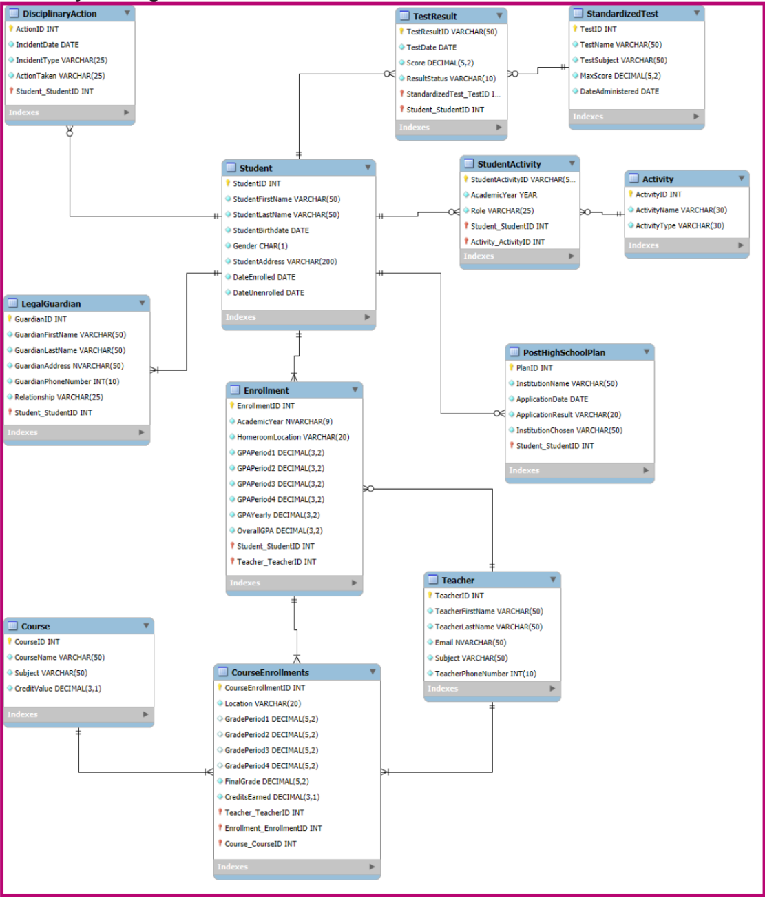
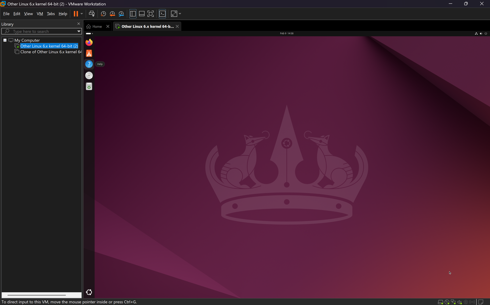
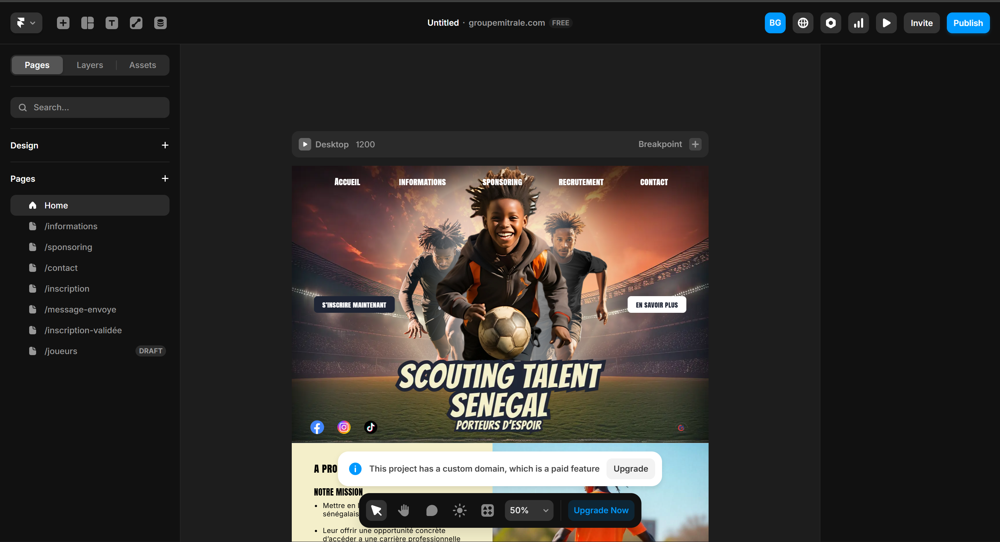
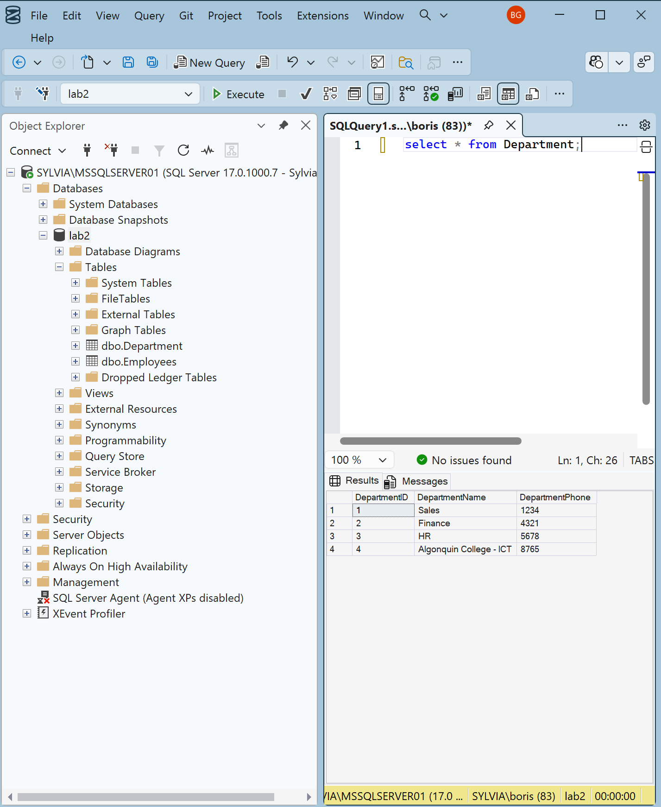

Projects
Database Creation
Description: My peers and I created a relational database system for a school as an assignment. We identified the different entities, created a physical diagram of the database and finally implemented it in SQL.
Completion Date: December 2025
Technologies Used: Database Concepts and SQL

Linux OS Installation
Description: I installed and configured a Linux operating system on a virtual machine for an assignment. I explored system administration tasks such as user management, file permissions, and package installation.
Completion Date: January 2026
Technologies Used: Linux, VMWare and Linux Terminal

Website Creation
Description: I created a responsive website for a local project using the Framer software. I implemented a modern design with interactive elements and optimized it for mobile devices.
Completion Date: April 2025
Technologies Used: Figma and Framer

SSMS Introduction
Description: I was introduced to SSMS (SQL Server Management Studio) and learned how to use it to manage and query databases.
Completion Date: January 2026
Technologies Used: SSMS and SQL
